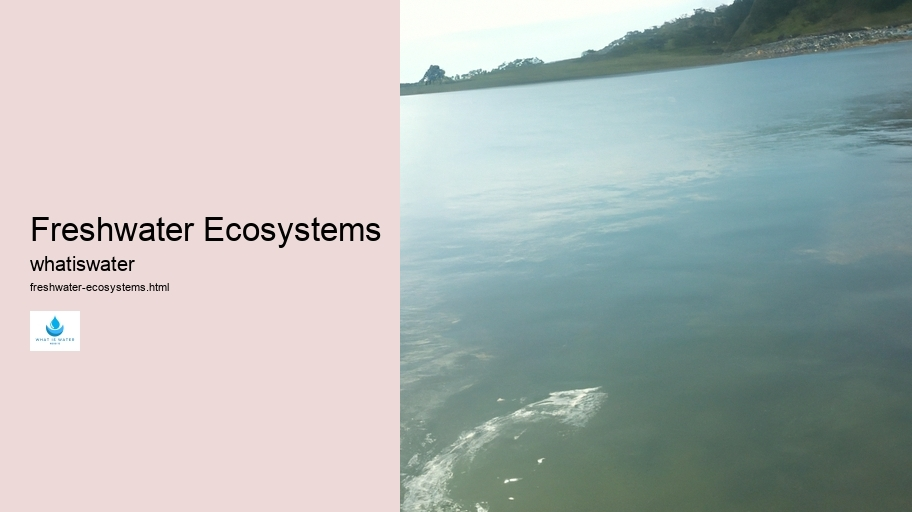

Hydrological Cycle
Hydrological Cycle
Evaporation and transpiration
Condensation and cloud formation
Precipitation and rain patterns
Surface runoff and river systems
Groundwater flow and aquifers
Snowmelt and glacial processes
Water storage in oceans lakes and reservoirs
Soil moisture and infiltration
Water balance and budgeting
Human impact on the hydrological cycle
Marine Ecosystems
Marine Ecosystems
Coral reefs and their biodiversity
Mangrove forests as coastal protectors
Ocean currents and climate regulation
Deepsea habitats and extremophiles
Intertidal zones and estuarine ecosystems
Marine food webs and trophic levels
Freshwater Ecosystems
Freshwater Ecosystems
Conservation efforts for marine species
Marine biogeochemical cycles
Impact of global warming on oceans
Water Resource Management
Water Resource Management
Rivers streams and creeks ecosystems
Lakes ponds wetlands habitats
Biodiversity in freshwater environments
Aquatic plants role in oxygenation
Freshwater fish species diversity
Invasive species impact on freshwater systems
Pollution threats to freshwater sources
Conservation strategies for freshwater biomes
Role of wetlands in flood control
Importance of riparian buffers
Cultural Significance of Water
Cultural Significance of Water
Sustainable water use practices
Desalination technologies for fresh water supply
Wastewater treatment processes
Rainwater harvesting techniques
Management of water during drought conditions
Transboundary water resource politics
Infrastructure for water distribution
Agricultural irrigation efficiency
Urban water demand management
Impact of climate change on water resources
About Us
Contact Us

Freshwater Ecosystems
Water and Sanitation
Freshwater ecosystems are cradles of biodiversity, vital to the survival and prosperity of countless species including humans.
Conservation efforts for marine species
. From meandering rivers to serene lakes, from expansive wetlands to hidden springs, these ecosystems offer an unparalleled array of habitats teeming with life.
At first glance, freshwater environments may seem tranquil and unchanging.
Water Conservation
However, beneath their placid surfaces lies a dynamic world where organisms are constantly interacting with each other and adapting to their surroundings.
Water and Sanitation
These waters provide essential resources such as food and shelter while also serving as highways for migratory species.
The inhabitants of freshwater ecosystems are as varied as the environments themselves.
Water Conflict
Fish weave through water columns, amphibians cling to aquatic plants, and invertebrates scuttle across sediment beds.
Freshwater Ecosystems - Aquatic Ecosystems
Water Conflict
Thermal Pollution
Groundwater
Each creature plays a role in maintaining the delicate balance within these habitats.
Moreover, freshwater systems play critical roles beyond nurturing wildlife; they support human livelihoods worldwide. Rivers irrigate crops, supply drinking water, offer recreational opportunities, and generate hydroelectric power. Unfortunately, these invaluable ecosystems face numerous threats due to pollution, overfishing, climate change, and habitat destruction.
Efforts to protect freshwater ecosystems must be a global priority.
Freshwater Ecosystems - Water Conservation
Desalination
Water Conflict
Thermal Pollution
Groundwater
Wastewater Treatment
Water Education
Conservation initiatives that include sustainable management practices can help preserve these natural treasures for future generations.
Freshwater Ecosystems - Water and Sanitation
Groundwater
Wastewater Treatment
Water Education
Aquatic Ecosystems
By recognizing the intrinsic value of freshwater habitats and the services they provide us all, we can ensure that these vital ecosystems continue to flourish on our planet Earth.
In conclusion: Freshwater ecosystems encompass diverse habitats essential both for wildlife sustenance and human welfare; yet they confront grave perils necessitating immediate conservation measures lest we risk losing this irreplaceable patrimony forevermore.
Hydrological Cycle
Check our other pages :
Rivers streams and creeks ecosystems
Impact of climate change on water resources
Marine biogeochemical cycles
Frequently Asked Questions
What are the main types of freshwater ecosystems and how do they differ from each other?
The main types of freshwater ecosystems are rivers and streams, lakes and ponds, and wetlands. Rivers and streams (lotic systems) are characterized by flowing fresh water that moves in a single direction. Lakes and ponds (lentic systems) are bodies of standing or non-flowing fresh water, ranging from small ponds to large lakes. Wetlands are areas where the soil is saturated with moisture either permanently or seasonally, such as swamps, marshes, and bogs. Each type supports different plant and animal species adapted to their specific water conditions.
Why are freshwater ecosystems important for biodiversity?
Freshwater ecosystems play a critical role in maintaining biodiversity because they serve as habitats for a wide range of species. These include not only aquatic organisms like fish, amphibians, insects, and plants but also provide crucial resources such as food, water, and breeding grounds for many terrestrial animals. They act as biological hotspots that foster various life forms due to their unique environmental conditions.
How do human activities impact freshwater ecosystems?
Human activities can have significant impacts on freshwater ecosystems through pollution (such as chemical runoffs from agriculture or industrial waste), habitat destruction (like damming rivers which alters flow patterns), overfishing or introduction of invasive species which disrupt local biota balance. Climate change also affects water temperature, availability, and quality which can alter the health of these ecosystems. Conservation efforts focus on mitigating these impacts through sustainable practices, legal protections for key habitats, restoration projects, and public education about the importance of maintaining healthy freshwater environments.